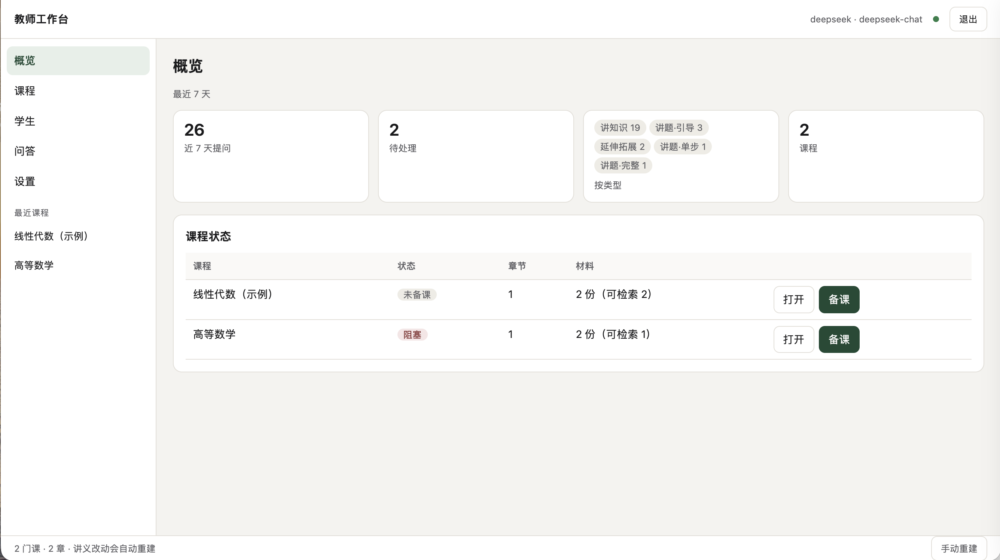
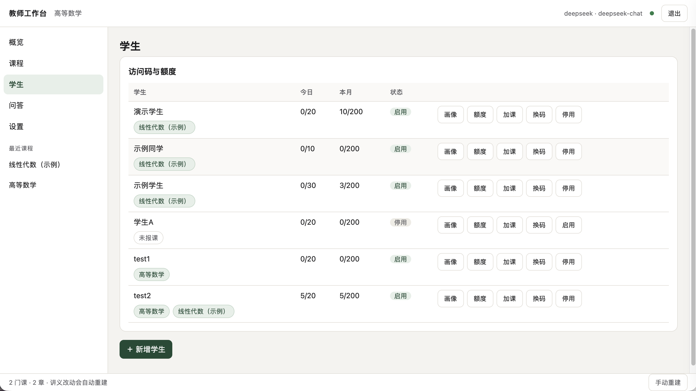
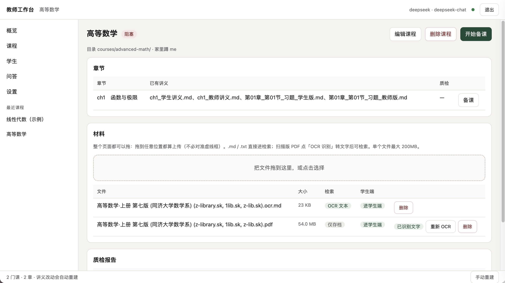
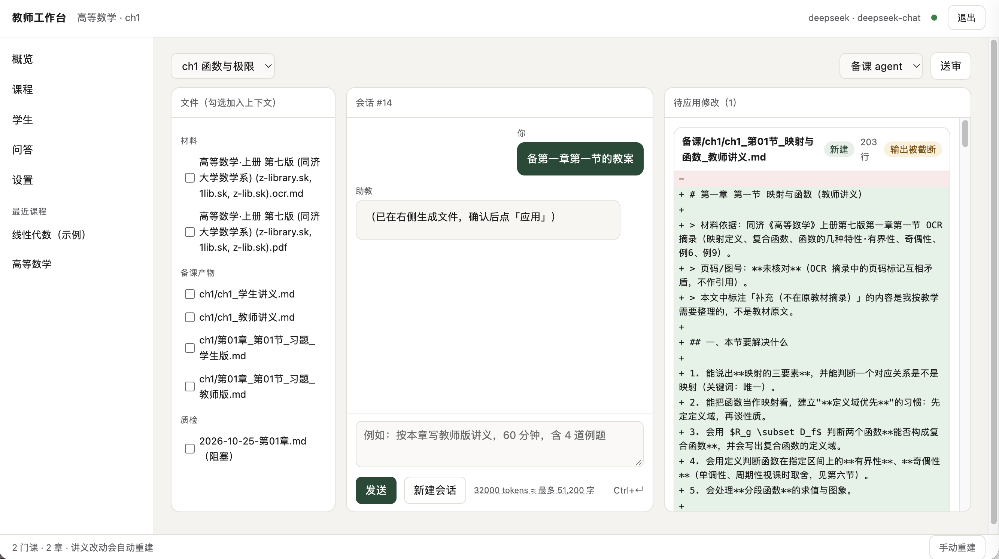
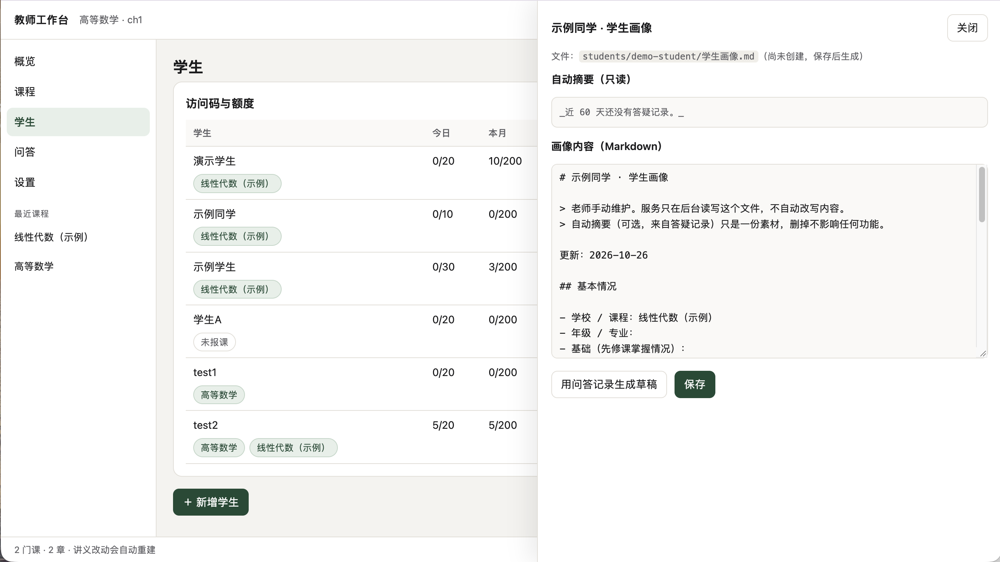
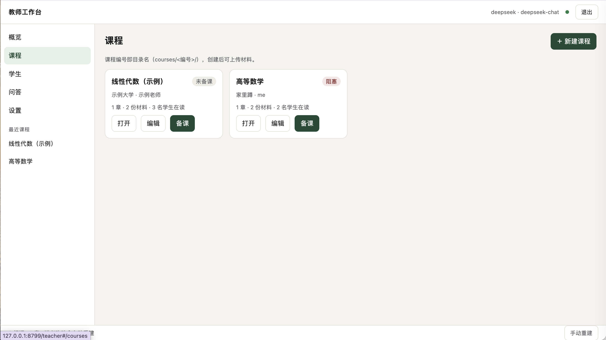
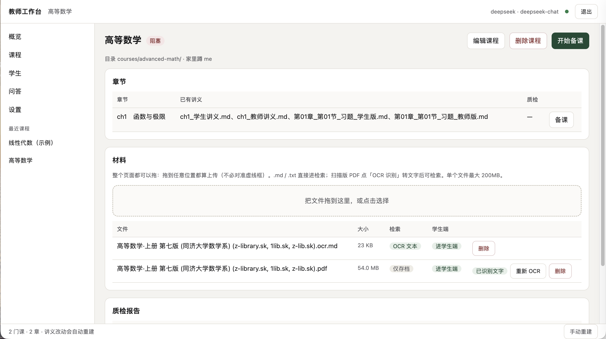
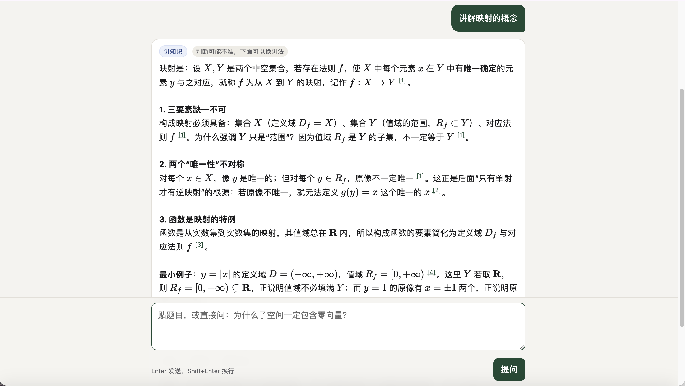

⌘
教师自己的课程体系
课程、章节、讲义、资料和学生关系围绕真实教学流程组织。
一个高度可配置、深度 AI 化的教师工作台：管理课程和学生，接入教师材料，辅助备课与审查，并为每个学生提供有出处的个性化助教。

从课程管理、材料接入、AI 备课到学生助教，快速了解系统如何贯穿教师的完整工作流。
如果播放器无法加载，可以在 B 站打开视频。
AI 贯穿课程管理、材料处理、备课审查和学生辅导；教师的课程结构、材料和教学方法始终是系统的核心。
课程、章节、讲义、资料和学生关系围绕真实教学流程组织。
一门课程服务多个学生，一个学生也可以学习多门课程，课程内容可以持续复用。
从知识库、备课、审查到答疑，不是孤立的聊天框。
助教基于课程材料回答并保留出处；材料没有找到依据时，会明确说明。

系统将课程、学生和报名关系分开管理。一门课可以带多个学生，一个学生也可以同时学习多门课。
教师只需维护一套课程材料，就能复用于不同学生，并分别管理每个学生的额度、状态和学习记录。
教师可以接入讲义、资料清单、勘误和 OCR 文本。系统通过大模型与 RAG 检索，把材料组织成可检索的课程知识库。
AI 备课和 AI 助教会优先检索相关章节、题目和材料来源，而不是凭空生成通用答案。


教师可以选择课程材料，输入教学目标，让 AI 生成教师版讲义、学生版讲义、课堂设计、例题和易错点等不同备课产物。
备课 Agent 负责生成内容，审查 Agent 负责检查材料依据、题号、引用和教学风险，形成“生成—审查—修改”的工作流。
系统不是只有一种固定输出。同一节课可以生成教师版讲义、学生版讲义、教师版习题和学生版习题，分别服务于备课、授课、练习与复习。
教师还可以根据自己的教学方法调整材料结构、输出要求和 AI 的写作规则，让模板逐渐变成自己的教学规范。
移入查看缩略图，点击后查看具体结构。

系统为每个学生建立独立画像，并结合学生报名的课程提供针对性答疑。
AI 助教支持知识解释、苏格拉底式引导解题、完整解题步骤、单个步骤解释和拓展延伸五种问答方式。
建立课程、章节和学生关系
构建课程专属知识库
生成、检查、修改和沉淀
针对学生问题继续辅导

集中管理不同课程，并快速进入课程详情或 AI 备课。

按章节组织讲义、OCR 文本和备课产物。
记录学生课程、基础和教师维护的个性化信息。

移入查看 5 种问答模式移入查看缩略图，点击具体示例放大查看。